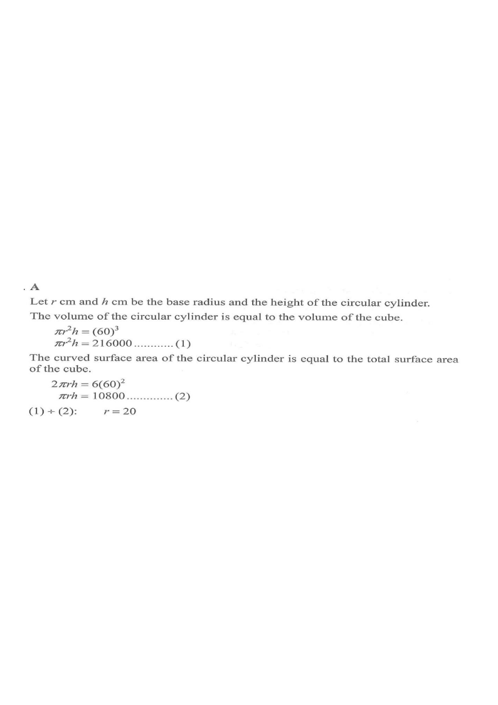

Let $r$ cm be the base radius and $h$ cm the height of the cylinder, and let the cube edge be $a=60$ cm.
Two unknowns $(r,h)$ ⟹ we need two equations.
Volume of cube $=a^3=60^3=216000\ \text{cm}^3$.
Volume of cylinder $=\pi r^2h$.
$$ \pi r^2 h = 216000 \qquad \cdots(1)$$Total surface area of cube $=6a^2=6(60)^2=21600\ \text{cm}^2$.
Curved surface area of cylinder $=2\pi r h$.
$$ 2\pi r h = 21600 \quad\Longrightarrow\quad \pi r h = 10800 \qquad \cdots(2)$$The $\pi$ and $h$ cancel beautifully — no need to find $h$.
Base radius $r=20\ \text{cm}$. (Check: (2) gives $h=\dfrac{10800}{20\pi}\approx171.9$ cm.)